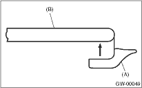
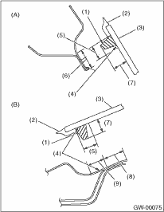

1. Install a new rubber strip (A) in position with the edge (B) of the rear gate glass.

2. Install the glass in the same procedure as for windshield glass.

|
(A) |
Upside |
|
(B) |
Left side and right side |
|
(1) |
Adhesive |
|
(2) |
Strip rubber |
|
(3) |
Glass |
|
(4) |
Primer |
|
(5) |
12 mm (0.47 in) |
|
(6) |
14 mm (0.55 in) |
|
(7) |
10 — 13 mm (0.39 — 0.51 in) |
|
(8) |
8 mm (0.31 in) |
|
(9) |
12 mm (0.47 in) |
3. About one hour after installation, inspect for leaks.
4. After completion of all work, allow the vehicle to stand for about 24 hours.
NOTE:
• When door is opened/closed after glass is bonded, always lower the door glass first, and then open/close it carefully.
• Move the vehicle slowly.
• For minimum drying time and vehicle standing time before driving after bonding, follow instructions or instruction manual from the adhesive manufacturer.
• When a vehicle is returned to the user, tell him or her that the vehicle should not be subjected to heavy impact for at least three days.
5. Connect the rear defogger terminals.
6. Install the rear gate garnish.